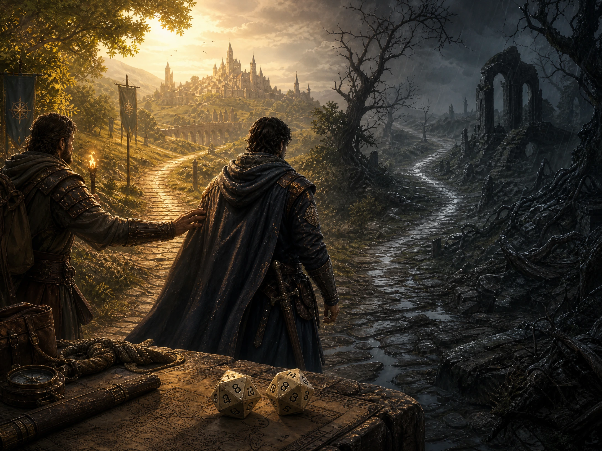

Sistema
Atributos, testes, combate, perícias e a trilha de progressão de personagem.
Os cinco atributos
Toda ficha em Valédria usa exatamente cinco atributos: Força, Destreza, Constituição, Sabedoria e Carisma. Na criação, você distribui 15 pontos entre eles (e mais 5 pontos por nível acima do 1º), com mínimo de 1 em cada atributo e sem um teto fixo por atributo — o único limite real é o total de pontos que você tem disponível.
Testes e dificuldade
Um teste é sempre 1d20 + atributo relevante, comparado a um número de dificuldade. Quando você tem treino em uma perícia relacionada, isso soma vantagem ao teste (veja abaixo).
| Dificuldade | ND | Descrição |
|---|---|---|
| Trivial | 8 | Qualquer pessoa tenta sem medo de errar. |
| Fácil | 10 | Exige um mínimo de atenção ou habilidade. |
| Moderada | 13 | Um desafio real para alguém destreinado. |
| Difícil | 16 | Exige treino, atributo alto ou sorte. |
| Muito difícil | 19 | Poucos conseguem sem vantagem. |
| Quase impossível | 22 | Feito lendário, quase sempre precisa de ajuda ou vantagem. |
Vantagem e desvantagem
Vantagem e desvantagem são resolvidas rolando 2d20: com vantagem, use o maior resultado; com desvantagem, use o menor. Se as duas se aplicam na mesma rolagem, elas se cancelam e o teste volta a ser um único d20.
Cada personagem começa com 2 perícias treinadas, escolhidas livremente entre a lista abaixo. Perícias adicionais dependem da progressão autorizada pelo mestre. Cada teste usa uma única perícia adequada, com seu atributo fixo; vantagens de perícias sobrepostas não se acumulam.

assets/img/personagens/mesa-de-jogo.webpPerícias
| Perícia | Atributo | Uso típico |
|---|---|---|
| Atletismo | Força | Correr, saltar, escalar e nadar contra a corrente. |
| Arrombamento | Força | Romper portas, grades e obstáculos pela força; fechaduras discretas usam Ladinagem. |
| Potência Física | Força | Erguer, empurrar, arrastar e sustentar cargas pesadas. |
| Agarrar e Imobilizar | Força | Segurar um oponente e impedir seus movimentos; escapar por contorção usa Acrobacia. |
| Remo | Força | Impulsionar uma embarcação a remo e vencer correntes; condução e manobras usam Montaria e Veículos. |
| Acrobacia | Destreza | Manter equilíbrio, cair bem, se contorcer para escapar de agarrões. |
| Furtividade | Destreza | Mover-se sem ser visto ou ouvido. |
| Ladinagem | Destreza | Abrir fechaduras, furtar bolsos, esconder pequenos objetos no corpo. |
| Iniciativa | Destreza | Reagir primeiro quando o perigo surge. |
| Montaria e Veículos | Destreza | Conduzir cavalos, carroças e barcaças em condições difíceis. |
| Percepção | Sabedoria | Notar detalhes, emboscadas e ruídos fora do lugar. |
| Investigação | Sabedoria | Juntar pistas, examinar cenas e documentos. |
| Memória | Sabedoria | Lembrar de fatos, lendas e rostos. |
| Medicina | Sabedoria | Estabilizar feridos, diagnosticar doenças. |
| Sobrevivência | Sabedoria | Rastrear, encontrar água e abrigo, prever o tempo. |
| Leitura de Ambiente | Sabedoria | Perceber tensões sociais e o clima de um lugar. |
| Persuasão | Carisma | Convencer sem ameaçar. |
| Intimidação | Carisma | Convencer pelo medo. |
| Enganação | Carisma | Mentir de forma convincente. |
| Intuição | Carisma | Perceber quando alguém está mentindo ou escondendo algo. |
| Comando | Carisma | Liderar, dar ordens que são seguidas em momentos de tensão. |
Combate, passo a passo
Estas são as regras básicas da mesa. Quando uma magia, técnica ou criatura traz uma regra específica, ela tem prioridade apenas naquele efeito. Uma descrição de aparência não concede ataques extras ou poderes por si só.
- Iniciativa: todos rolam 1d20 + Destreza; treino em Iniciativa dá vantagem. Age primeiro o maior total. Empates usam a maior Destreza; persistindo, jogadores escolhem entre si e agem antes dos adversários. Mantenha a ordem até o fim da cena.
- Seu turno: mova-se até 6 metros e faça uma ação, na ordem que preferir. Pode dividir o movimento antes e depois da ação. Uma rodada termina quando todos tiveram um turno e representa cerca de 6 segundos.
- Sua ação: faça um ataque, use uma magia ou técnica, use um item, ajude alguém, estabilize um ferido, tente um agarrão, escape de um agarrão ou corra mais 6 metros. Sacar um item acessível e dizer uma frase curta não gastam ação; trocar armadura exige tempo fora de combate.
- Ataque: role 1d20 + Força para armas corpo a corpo ou + Destreza para armas à distância. Adagas podem usar qualquer um dos dois. Magias usam Sabedoria, salvo indicação própria. Igualar ou superar a Defesa acerta. Perícias não dão vantagem a ataques com armas, mas valem nos testes de manobra indicados abaixo.
- Dano: role o dado da arma + metade do atributo usado, arredondada para baixo. Subtraia da Vida. Uma fórmula específica de magia ou técnica substitui esse cálculo; não some o atributo duas vezes. A Vida nunca fica abaixo de zero nem acima da máxima.
Um 20 natural sempre acerta um ataque, e um 1 natural sempre erra; não há dano dobrado automático. Em outros testes, compare o total normalmente. Não role para tarefas seguras sem consequência de falha. Várias vantagens não se acumulam; qualquer vantagem e desvantagem se cancelam.
Defender
Gaste sua ação para impor desvantagem aos ataques contra você até o início do seu próximo turno.
Ajudar
Explique como ajuda um aliado que possa alcançar. Ele tem vantagem no próximo teste ou ataque relacionado até o início do seu próximo turno.
Reações
Não há ataque de oportunidade automático. Você só reage fora do turno quando um efeito permite, no máximo uma vez até o início do seu próximo turno. Pague seu custo normal.
Uma técnica que melhora um golpe inclui um único ataque na própria ação. Ativar uma proteção ou outro efeito também usa a ação, salvo indicação expressa de reação. Não ganhe uma segunda ação por usar Aura. Para um efeito ofensivo sem teste publicado, role o ataque normal contra Defesa; se errar, não aplica dano nem controle. Se já houver ataque ou teste de resistência, não exija uma segunda rolagem para o mesmo efeito, salvo indicação explícita. Pague Mana ou Fôlego ao tentar, mesmo em caso de falha. Dano periódico acontece no fim do turno do alvo. Resistência sem valor numérico reduz aquele tipo de dano à metade, arredondado para baixo; imunidade o anula. Resistência não se acumula consigo mesma. Uma duração de uma rodada termina no fim do próximo turno de quem criou o efeito; durações maiores contam esses mesmos turnos.
Defesa, armas e proteção
Defesa = 10 + metade da Destreza (arredondada para baixo) + armadura + escudo. Use uma única armadura. O escudo dá +1 e ocupa uma mão. Armaduras não reduzem dano depois de um acerto. A Vida máxima do personagem é 5 + (2 × Constituição), a mesma fórmula usada na ficha. Criaturas conservam a Defesa e a Vida publicadas no Bestiário.
Sem armadura: +0. Couro ou proteção leve: +1. Cota de malha ou proteção média: +2. Placas ou proteção pesada: +3 e desvantagem em Furtividade. Não some duas proteções da mesma categoria; efeitos mágicos iguais não se acumulam, use o maior. Bônus temporários de fontes diferentes podem somar quando não disserem o contrário.
| Arma comum | Dado | Uso |
|---|---|---|
| Desarmado | 1 ponto | Força; some metade do atributo normalmente. |
| Adaga, faca ou arma improvisada | 1d4 | Uma mão; improvisadas usam Força. |
| Espada curta, maça, machado de uma mão ou lança | 1d6 | Uma mão, corpo a corpo. |
| Espada longa | 1d8 | Uma mão, corpo a corpo. |
| Espadão, machado pesado ou martelo de duas mãos | 1d10 | Duas mãos; não permite escudo. |
| Arco curto ou funda | 1d6 | Destreza, alcance médio; arco usa duas mãos. |
| Arco longo ou besta | 1d8 | Destreza, alcance longo, duas mãos. Recarregar a besta exige a próxima ação. |
Arremessar adaga ou lança usa Destreza, alcance curto e o dado normal da arma. Uma segunda arma não concede outro ataque. Para um item comum não listado, use a categoria mais parecida e anote antes do combate. Artefatos mantêm seus efeitos próprios. Preços permanecem no Livro III e no catálogo da ficha.
Distâncias e manobras
Toque ou adjacente: até 1,5 m. Curto: até 9 m. Médio: até 18 m. Longo: até 36 m. Alcance pessoal afeta o próprio usuário. Uma área pequena sem alcance começa no conjurador. Efeitos regionais e rituais exigem preparação e limites combinados antes do uso, fora do combate comum. Sem alcance publicado, uma arma natural alcança apenas um alvo adjacente. Não ataque além do alcance. Em uma grade, cada casa tem 1,5 m: o movimento normal são quatro casas.
Terreno difícil custa o dobro do movimento. Cobertura parcial concede +2 de Defesa contra ataques que a atravessam; cobertura total impede o ataque direto. Ataques à distância contra um alvo adjacente têm desvantagem. É preciso enxergar o alvo e ter caminho livre, salvo efeito que diga o contrário.
Sem tamanho indicado, uma área tem raio de 3 m e uma área grande, raio de 6 m; uma linha mede 1,5 m de largura até o alcance descrito. O centro deve estar ao alcance. A área afeta aliados também, salvo indicação contrária. Role um ataque e compare com cada Defesa, ou cada alvo faz o teste de resistência pedido. Role o dano uma vez para os atingidos.
Agarrar: com uma mão livre, faça Força (Agarrar e Imobilizar) contra Força da vítima ou Destreza (Acrobacia), à escolha dela. O maior total vence; empate mantém a situação. Alvos de tamanho semelhante ou menor podem ser agarrados: ficam imobilizados. Não arraste o alvo nesta regra básica. Soltar é livre; afastar-se dele encerra o agarrão. Escapar usa uma ação e repete o confronto.
Empurrar ou derrubar: use uma ação e o mesmo confronto de Força contra Força ou Acrobacia, com o mesmo limite de tamanho. Se vencer, escolha empurrar 1,5 m ou deixar caído. Manobras não causam dano adicional.
Vida, queda e descanso
Ao chegar a zero de Vida: você cai inconsciente e começa a marcar falhas. No início de cada turno, role 1d20 + Constituição contra ND 10. Sucesso mantém a situação; falha acrescenta uma marca. Três falhas causam a morte. Cada fonte de dano recebida enquanto estiver a zero acrescenta uma falha, sem Vida negativa. Ameaças de morte devem ser combinadas com o grupo antes da aventura.
Estabilizar: um aliado adjacente gasta uma ação e testa Sabedoria (Medicina) contra ND 10. Sucesso elimina as falhas e deixa você estável, ainda inconsciente e com zero de Vida, sem novos testes. Falhar não piora o ferido. Novo dano encerra a estabilidade e acrescenta uma falha. Qualquer cura que eleve a Vida acima de zero acorda o personagem e elimina todas as falhas.
Descanso breve: 10 minutos fora de perigo restauram todo o Fôlego de Aura. Uma vez entre descansos longos, também recuperam Vida igual à Constituição, até o máximo; um personagem estável pode receber esse benefício e acordar. Não restauram Mana. Se essa recuperação de Vida já foi usada, alguém estável e sem cura acorda com 1 de Vida após uma hora de repouso seguro.
Descanso longo: 8 horas em abrigo seguro, com água e alimento, restauram toda a Vida, Mana e Fôlego, no máximo uma vez a cada 24 horas. Combate ou esforço intenso interrompem o descanso; recomece a contagem. Não remove maldições, doenças nem perdas permanentes descritas em efeitos próprios.
Se houver pressão que impeça descansar, uma vez por cena o praticante de Aura pode gastar uma ação e testar Constituição contra ND 13 para recuperar 1 Fôlego, sem superar o máximo. Isso permite usar o Amuleto do Fôlego: sua vantagem vale nesse teste. Técnicas avançadas com limites por cena ou campanha conservam esses limites. Os botões de restaurar recursos apenas registram a recuperação permitida por estas regras; não curam por conta própria durante o combate.
Condições
| Condição | O que muda | Como termina |
|---|---|---|
| Caído | Ataques corpo a corpo contra você têm vantagem; seus ataques têm desvantagem. | Gaste metade do movimento para se levantar. |
| Imobilizado | Não pode se deslocar, mas ainda pode agir. | Escape do agarrão ou cumpra o teste/duração do efeito. |
| Atordoado | Sem ação, movimento ou reação; ataques contra você têm vantagem. | Na duração indicada; se omitida, no fim do seu próximo turno. |
| Inconsciente | Sem ações ou percepção; cai no chão e ataques contra você têm vantagem. | Cura ou recuperação de ferimentos; sono mágico segue o efeito próprio. |
| Cego ou alvo não visível | Seus ataques e testes que dependem da visão têm desvantagem. Não pode escolher um alvo cuja posição desconhece. | Ao recuperar a visão ou localizar o alvo; cegueira sem duração termina no fim do seu próximo turno. |
| Amedrontado | Desvantagem em testes e ataques enquanto percebe a fonte; não pode se aproximar dela voluntariamente. | Sabedoria ND 13 no fim do turno, sem gastar ação, ou quando a fonte sair da cena. |
| Envenenado | Desvantagem em testes e ataques; não causa dano extra sem indicação. | Constituição ND 13 no fim do turno, sem ação, ou tratamento descrito pelo veneno. |
| Sangrando ou queimando | Recebe o dano e a duração publicados. Sem números, sofre 1d4 no fim do próximo turno, uma única vez. | Uma ação sua ou de aliado adjacente estanca/apaga antes do dano, com meios adequados. |
| Exausto | Desvantagem em testes e ataques; não acumula níveis de exaustão. | Descanso breve; uma técnica com duração definida usa sua própria duração. |
Imobilização causada por magia segue o teste indicado; se ele não disser quando tentar escapar, use uma ação. Sem teste nem duração publicados, use Força ND 13 para escapar com uma ação; o efeito também termina ao fim do próximo turno de quem o criou. A condição não acumula consigo mesma. Reaplicá-la renova a duração, sem dobrar penalidades ou dano periódico. Testes, durações e efeitos específicos de uma magia, veneno ou técnica têm prioridade sobre esta tabela.
Um exemplo na mesa
Lia tem Força 4, Destreza 3, Constituição 3, Sabedoria 3 e Carisma 2: seus 15 pontos iniciais. Tem 11 de Vida. Com couro (+1) e escudo (+1), sua Defesa é 10 + 1 + 1 + 1 = 13.
No turno dela, Lia se aproxima do lobo e ataca com espada longa. O d20 mostra 9: 9 + Força 4 = 13, acertando a Defesa 11 do lobo. O d8 mostra 3: ela causa 3 + 2 = 5 de dano. O lobo cai de 14 para 9 de Vida. O lobo usa seu próprio turno para atacar; Lia não recebe outro ataque só por estar adjacente.
Monstros sem ataque publicado: use uma ação para um ataque natural contra um alvo adjacente, com 1d20 + o maior entre Força e Destreza; dano 1d6 + metade desse mesmo atributo, arredondada para baixo. O lobo, por exemplo, ataca com +3 e causa 1d6 + 1. Não adicione poderes sugeridos apenas pela ilustração. Ataques e efeitos específicos publicados substituem essa base. Criaturas lendárias exigem preparação do mestre e não são encontros de introdução.
Montarias
Uma montaria é conquistada na história, comprada ou recebida com aprovação do mestre. Escolher sua imagem na ficha registra essa conquista; não concede o animal automaticamente. A origem indica onde é comum, não restringe quem pode cavalgar. Elfos não têm tradição de montarias.
Como jogar montado
- Montar ou desmontar: custa 3 m do movimento, junto ao animal. Sem teste em segurança. Uma montaria carrega um cavaleiro com seu equipamento de viagem; as Cabras das Alturas suportam um anão adulto com armadura. Passageiro extra ou carga volumosa depende do mestre e reduz o movimento à metade.
- Mesmo turno: a montaria se move na iniciativa do cavaleiro. Use o movimento dela em vez do seu; não some os dois. Sua ação continua única. Correr gasta sua ação e dobra o movimento da montaria naquele turno. Montarias comuns não concedem ataque adicional.
- Manobras arriscadas: Destreza ND 13 para saltar obstáculo baixo ou manter o assento; Sabedoria ND 13 para acalmar o animal assustado. Perícia pertinente concede vantagem. Falha interrompe a manobra e o movimento restante; se havia risco de queda, você desmonta à força, fica caído e sofre 1d4 de dano. Não role para simplesmente viajar.
- Terreno: terreno difícil custa o dobro de movimento, salvo o benefício do catálogo. Passagens estreitas exigem desmontar. O cavaleiro não recebe bônus automático de ataque, Defesa ou dano. Benefícios de montaria não acumulam vantagem com outras fontes.
- Proteção: o atacante escolhe cavaleiro ou montaria, usando a Defesa e Vida do alvo. A 0 de Vida, a montaria cai e usa as regras de queda, primeiros socorros e morte deste livro (Constituição 2). O cavaleiro testa Destreza ND 13 para desmontar em pé; falha deixa-o caído, sem dano extra nessa queda.
- Cuidados: água, alimentação e repouso diários. Em estrada segura, um grupo totalmente montado percorre até uma vez e meia a distância normal; terreno, carga ou viajantes a pé podem reduzir isso. Um dia sem água ou comida reduz o movimento à metade e remove o ganho de viagem até receber cuidados e descanso longo. Recuperação de Vida segue as regras de descanso, usando Constituição 2.
- Aquisição: o mestre apresenta preço ou recompensa antes da decisão, conforme a economia local. Movimento, Vida e Defesa das montarias comuns não aumentam com o nível do cavaleiro. Uma montaria especial exige regra própria combinada com a mesa.
Exemplo: Lira monta seu cavalo e usa 3 dos 12 m para subir na sela. Avança os 9 m restantes e usa sua ação para ajudar um aliado. Não recebe outra ação por estar montada.
Registrar minha montaria na ficha →Papéis de personagem
Uma vez por cena, antes de rolar, descreva como sua ação expressa seu papel. Se o mestre reconhecer a ligação com uma das situações abaixo, você ganha vantagem naquele teste: role 2d20 e use o maior. Vale para testes de ação, inclusive um ataque ligado à situação, mas não para dano, iniciativa ou recuperação de Vida. Não concede ação extra, não acumula com outra vantagem e cancela desvantagem normalmente. A tentativa consome o benefício mesmo se falhar.
O papel descreve como o personagem participa da história; não limita armas, atributos, Magia ou Aura. Responda pelo personagem no início da campanha. Um novo teste do mesmo personagem nessa campanha só acontece com autorização do mestre, quando experiências, escolhas ou traumas justificarem a mudança.
Qual é o seu papel na aventura?
Seis pequenas cenas, sem resposta certa. Descubra o impulso que move seu personagem.
Dois caminhos, uma escolha
Todo personagem começa com 50 pontos de Mana. A partir daí, dois caminhos avançados se abrem — e são mutuamente exclusivos: a Magia Externa (Livro VI), que consome Mana e escala pelo Grimório, ou a Aura (Livro VII), que consome Fôlego de Aura e escala pelos Caminhos marciais. Nenhum personagem pratica os dois ao mesmo tempo. A reserva inicial não permite conjurar sem escolher Magia; para praticantes de Aura, a Mana fica latente e o recurso usado é o Fôlego.
Trilha de progressão
Nas terras humanas, a progressão vai do nível 1 ao nível 10. A partir daí, o crescimento deixa de ser medido em níveis fixos e passa a ser medido pelos graus de poder concedidos por professores, grimórios e forjas rúnicas nos arcos élfico, anão e demoníaco.
Avanço por marcos: antes de cada arco, o mestre apresenta um objetivo importante, como proteger uma aldeia ou resolver um mistério. Ao concluí-lo, todo o grupo sobe um nível, até o 10º, e distribui mais 5 pontos de atributo. Não há experiência por quantidade de mortes. Graus de Magia e Aura exigem aprendizado na história, não são concedidos automaticamente por subir de nível.
Bônus de Aura: cada novo grau do Caminho principal concede um ponto extra, fora dos pontos de nível. Siga a ordem publicada: Força; Destreza; ou, no Caminho da Morte, Força, Constituição, repetindo; no Caminho da Técnica, Destreza, Sabedoria, Carisma, repetindo. Repetir um grau ou treinar outro Caminho não duplica o benefício: no máximo seis pontos de grau por personagem. Na ficha, escolha o Caminho principal e o grau marcial: os bônus são somados automaticamente no resumo e na impressão, sem consumir os pontos base. Vida e Defesa também são recalculadas. Escolha a armadura e o escudo que estiver usando; tê-los apenas na mochila não conta como equipamento vestido. Alterar os bônus não restaura Vida perdida; use a recuperação quando permitida pelas regras.